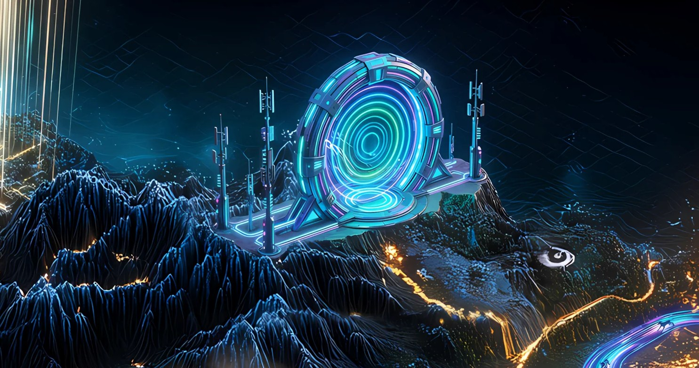

Record // INFRASTRUCTURE
MIGRATION GATE

A worldwide wireless network picked itself up and moved entirely onto Solana.
What happened
Helium, a decentralized wireless (DePIN) network, proposed in HIP-70 to deprecate its own Layer-1 blockchain and migrate its tokens and operations to Solana, moving Proof-of-Coverage and Data Transfer accounting off-chain to oracles. The migration went live on April 18, 2023, after the community approved HIP-70.
Why Solana remembers it
It was one of the largest DePIN networks to abandon a bespoke chain for Solana, validating Solana as settlement infrastructure for real-world physical networks and helping establish the DePIN category there.
On the map
A great wireless beacon-tower relocating its foundations onto firmer bedrock.